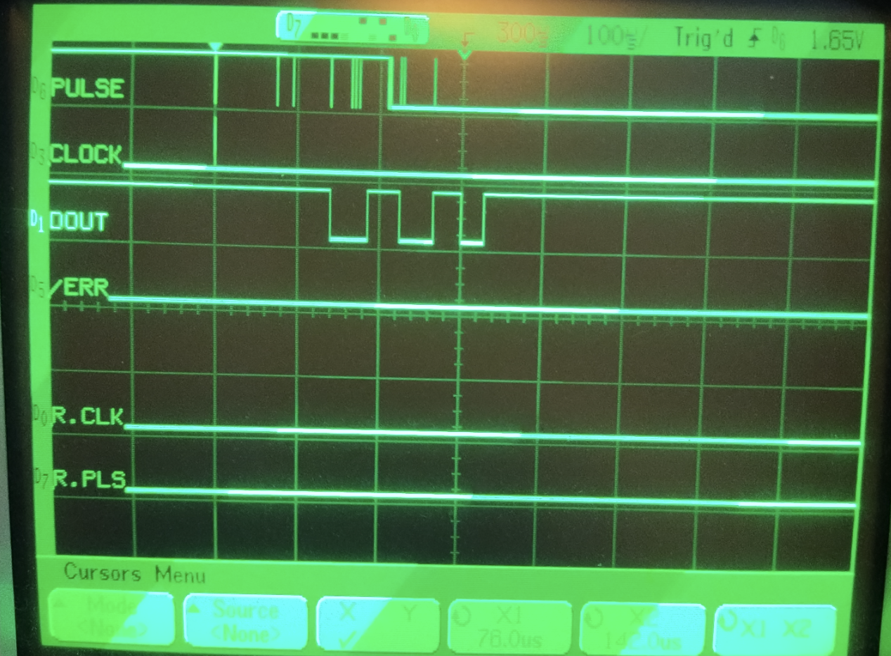

MicroPython and Pi Pico
Evaluating Features and Performance

(Can it replace Arduino?)
COhPy Presentation - 2024-02-26
NB
* Exploration process is shown
* Dead ends and circle backs
* Stable dev environment is out of scope
Overview: Python

https://www.python.org
- Scripting language
- Dynamic typing
- Strongly typed
- GC memory management
- Modular, object oriented
- Batteries included
- Starting from ~640k memory
text data bss dec filename
4887079 1373016 273192 6533287 libpython3.11.so
Overview: Arduino
- Hardware
- The classic Uno R3
- 32k flash, 2k ram, 16 MHz CPU (8 bit)
- wp: List of Arduino boards
and compatible systems
- IDE
- Edit and compile code
- Program flash
- Run and debug
- SDK
- C (mostly), C++ (maybe?)
- "Shields"
- Standard form factor
- Pins and function
- Embedded, IoT, physical computing
Overview: MicroPython

https://micropython.org
- YouTube: MicroPython & the
Internet of Things
Damien George • GOTO 2016
- Kickstarter research project:
- Goal: 256k flash, 16k ram, 70 MHz
- PyBoard (1M flash, 192k ram, 168 MHz)
- Currently supported:
- ~9 ports, ~40 MCUs, 150+ boards
- See also
- Desktop version
- CircuitPython (+friendly features, -unsafe features)
- micropython-lib
- mip (mip installs package)
Overview: Raspberry Pi Pico

- rp2040 processor
- ARM Cortex-M0+ (dual core)
- 125 MHz (133 - 200+)
- 264k ram (256 + 4 + 4)
- 2M flash (QSPI XIP)
- BootROM
- Debug SWD (picotool, picoprobe)
- Power options...
- 4 variants
- $3.99 = base
- +$2 W = wifi (Infineon CYW43439)
- +$1 H = headers vs castellated
- Other boards using rp2040 / 16M flash...
Overview: Criteria For Success
- Replace these boards
- K64F and SAMD51 (Cortex-M4F)
- 512k flash, 192k ram, 120 MHz CPU (32 bit)
- Uno R3 shield compatible
- FreeRTOS + C, bare metal + C++, SWD
- Typical applications
- Standard peripherals + new drivers
- Real-time control loops (100 Hz)
- Interrupts (10 kHz)
- Data acquisition (1 MHz)
- Productivity boost
- High level language (Fast code / test cycle)
- Support large projects (namespaces, classes, OOP)
- Batteries available
- Packages
- Drivers
Pico Peripherals Summary
- 26 GPIO (pins)
- 3 Analog input
- 4 + 1 Internal GPIOs
- GP23 - SMPS power save (off)
- GP24 - VBUS presence detect
- GP25 - LED
- GP29 - Analog (1/3 VSYS)
- n/a - Analog (rp2040 Temp)
- 2 each: UART, SPI, I2C
- PWM
- Timer
- RTC
- 8 PIO (next presentation)
- Not (yet) in MicroPython
- DMA
- USB host / device
Download Latest Docs
PDFs
- "Raspberry Pi Pico Pinout" ( 1 page)
- "Raspberry Pi Pico Python SDK" ( 50 pages)
- "Raspberry Pi Pico Datasheet" ( 30 pages)
- "Raspberry Pi Pico C/C++ SDK" (200 pages)
- "RP2040 Datasheet" (650 pages)
(SAM D5x/E5x = 2150 pages, K64 Sub-Family = 1800 pages)
Source code
- https://github.com/micropython/micropython/tree/master/ports/rp2
- https://github.com/raspberrypi/pico-micropython-examples
And more
- https://github.com/raspberrypi/pico-sdk
- https://github.com/raspberrypi/pico-examples
- https://github.com/raspberrypi/picotool
...
- https://github.com/raspberrypi/pico-bootrom
- https://github.com/raspberrypi/pico-tflmicro
New Pico Set Up / Recovery
- Power on while pressing BOOTSEL
- Connect to a USB port
- BootROM is USB mass storage device
usb_msc_auto_quirk: UQ_MSC_NO_GETMAXLUN set for USB mass storage device Raspberry Pi RP2 Boot (0x2e8a:0x0003)
ugen0.2: at usbus0
umass0 on uhub1
umass0: on usbus0
umass0: SCSI over Bulk-Only; quirks = 0x0100
umass0:1:0: Attached to scbus1
da0 at umass-sim0 bus 0 scbus1 target 0 lun 0
da0: Removable Direct Access SCSI-2 device
da0: Serial Number E0C9125B0D9B
da0: 1.000MB/s transfers
da0: 128MB (262144 512 byte sectors)
da0: quirks=0x2
ugen0.3: at usbus0
ugen0.4: at usbus0
ugen0.5: at usbus0
- FAT file system
- Info file describes the pico
- github raspberrypi pico-bootrom
# mount -t msdosfs /dev/da0s1 /mnt
# find /mnt/
/mnt/
/mnt/INDEX.HTM
/mnt/INFO_UF2.TXT
# cat /mnt/INDEX.HTM
<html>
<head>
<meta http-equiv="refresh" content="0;URL='https://raspberrypi.com/device/RP2?version=E0C9125B0D9B'"/>
</head>
<body>
Redirecting to
<a href='https://raspberrypi.com/device/RP2?version=E0C9125B0D9B'>
raspberrypi.com</a>
</body></html>
# cat /mnt/INFO_UF2.TXT
UF2 Bootloader v3.0
Model: Raspberry Pi RP2
Board-ID: RPI-RP2
- Download the firmware (note plain or "W" model) from
https://micropython.org/download/
- Copy in UF2 firmware to program flash
- Wait for reset
# cp RPI_PICO_W-20231005-v1.21.0.uf2 /mnt/
# umount /mnt
ugen0.2: at usbus0
umodem0 on uhub1
umodem0: on usbus0
umodem0: data interface 1, has no CM over data, has no break
Connect To the REPL Over Serial
- Enter to get a prompt ">>>"
- Control-C to interrupt
- Control-D to soft reset
- It's a Python (mostly)
docs.micropython.org: MicroPython differences from CPython
$ minicom -D /dev/cuaU0
>>>
>>>
>>> ^D
MPY: soft reboot
MicroPython v1.21.0 on 2023-10-06; Raspberry Pi Pico W with RP2040
Type "help()" for more information.
>>>
>>> print('Hello, world!')
Hello, world!
>>> 1 + 2 * 3
7
MicroPython Modules
docs.micropython.org:
- Python Module Index
- Quick reference for the RP2
machine - Peripherals and memory
rp2 - rp2040 family specific peripherals
micropython - Interpreter internals
gc - Garbage Collection
array - Data buffers
os - Flash filesystem, urandom
sys - Python info
asyncio - Non-blocking i/o "threads"
framebuf - Graphics primitives
network - Network config, WLAN
socket - Network sockets
ssl - SSL sockets
Blink the Pico's LED
- Green LED by the Pico's USB connector
- Use a machine.Pin instance
- Measure execution time
- Display loop frequency
- Control-E to paste in code (next slide is copy-able)
>>> ^E
paste mode; Ctrl-C to cancel, Ctrl-D to finish
=== import machine
=== import time
=== NREPS = 1_000
=== led = machine.Pin('LED', machine.Pin.OUT)
=== t0 = time.ticks_us()
=== for i in range(NREPS):
=== led.on() # Or value(1) or high() or (1) or toggle()
=== led.off() # Or value(0) or low() or (0) or toggle()
=== t1 = time.ticks_us()
=== dt = time.ticks_diff(t1, t0) / 1e6 # in seconds
=== freq = NREPS / dt
=== print('%.3f(kHz)' % (freq / 1e3))
=== ^D
1.600(kHz)
>>>
Blink on External LED
- Add an LED and resistor to pin 18
- Repeat the test
>>> ^E
import machine
import time
NREPS = 100_000
red_led = machine.Pin(18, machine.Pin.OUT)
t0 = time.ticks_us()
for i in range(NREPS):
red_led.on()
red_led.off()
t1 = time.ticks_us()
dt = time.ticks_diff(t1, t0) / 1e6 # in seconds
freq = NREPS / dt
print('%.3f(kHz)' % (freq / 1e3))
29.027(kHz)
>>>
Analysis - Blink One LED
- Observed performance change
- On-board 2 kHz
- External: 29 kHz
- Explained by LED connections
- PICO-W SPI bus - WIFI chip - On-board LED
- GPIO18 - 74ahct14 - External LEDs
Note: non-Wifi Pico LED is wired to GPIO25
Blink Three External LEDs
- Clean up the code a bit
- Wire LEDs with resistors to pins 18, 19, 20
- 3 machine.Pin objects
- How much slower?
import machine
import time
def blink_rgb(NREPS = 100_000):
R = machine.Pin(18, machine.Pin.OUT)
G = machine.Pin(19, machine.Pin.OUT)
B = machine.Pin(20, machine.Pin.OUT)
t0 = time.ticks_us()
for i in range(NREPS):
R.on(); G.on(); B.on()
R.off(); G.off(); B.off()
t1 = time.ticks_us()
dt = time.ticks_diff(t1, t0) / 1e6 # in seconds
freq = NREPS / dt
print('%.3f(kHz)' % (freq / 1e3))
blink_rgb()
.
.
.
34.753(kHz)
Analysis - Blinking LEDs
- Performance improved
- Expected: 3x slower
- Actual: 20% faster (29 to 35 kHz)
- Use functions
- locals over globals
- locals over attributes
- globals and attributes = dict lookup
- locals and parameters = index on stack
Blink Three External LEDs - At Once!
- MicroPython allows direct memory access
- Pico peripherals' registers are memory mapped
- One memory poke can set or clear many GPIO
import machine
from micropython import const # Compiler optimizes
import time
def blink_rgb(NREPS = 100_000):
# See rp2040 datasheet (2.3.1.7)
SIO_BASE = const(0xd000_0000)
GPIO_OUT_SET = const(SIO_BASE + 0x014)
GPIO_OUT_CLR = const(SIO_BASE + 0x018)
# Let the Pin class do hardware initialization
R = machine.Pin(18, machine.Pin.OUT)
G = machine.Pin(19, machine.Pin.OUT)
B = machine.Pin(20, machine.Pin.OUT)
# Bits 18, 19, 20 = pins 18, 19, 20.
RGB = const(0b111 << 18)
mem32 = machine.mem32 # Raw memory access [:]
t0 = time.ticks_us()
for i in range(NREPS):
mem32[GPIO_OUT_SET] = RGB
mem32[GPIO_OUT_CLR] = RGB
t1 = time.ticks_us()
dt = time.ticks_diff(t1, t0) / 1e6 # in seconds
freq = NREPS / dt
print('%.3f(kHz)' % (freq / 1e3))
blink_rgb()
98.587(kHz)
Blink Three External LEDs - Viper
- @micropython.viper function decorator
- Uses type hints
- Optimizes simple data types
- Adds pointer types
- Emits native code
import machine
import time
pins = [ machine.Pin(k, machine.Pin.OUT)
for k in ( 18, 19, 20 ) ]
@micropython.viper
def blink_rgb(NREPS: int): # No default values
SIO = ptr32(0xd000_0000) # "C" Array of int
GPIO_OUT_SET: int = 0x014 // 4
GPIO_OUT_CLR: int = 0x018 // 4
RGB: int = 0b111 << 18
t0 = time.ticks_us()
for i in range(NREPS):
SIO[GPIO_OUT_SET] = RGB
SIO[GPIO_OUT_CLR] = RGB
t1 = time.ticks_us()
dt = time.ticks_diff(t1, t0) / 1e6 # in seconds
freq = float(NREPS) / dt
print('%.3f(kHz)' % (freq / 1e3))
blink_rgb(5_000_000)
2231.122(kHz)
Digital Input Pin

- Button 1 from GP4 to +3v3
- Button 2 from GP5 to GND
from machine import Pin
btn_1 = Pin(4, Pin.IN, Pin.PULL_DOWN)
btn_2 = Pin(5, Pin.IN, Pin.PULL_UP)
old_vals = (-1, -1)
while True:
new_vals = ( btn_1.value(), btn_2.value() )
if new_vals != old_vals:
print(new_vals)
old_vals = new_vals
(0, 0)
(1, 0)
(0, 0)
(1, 0)
(0, 0)
Analog Input ADC

- Variable resistor to 3v3 and GND, sense to GP28
- ADC3 = VSYS/3, ACD4 = Temperature
- Result 0-65535, scale 0-3.3V
- Noisy and biased, see datasheet
from machine import ADC
import time
slider_1 = ADC(28) # Channel 0-4 or Pin 26-28
old_val = -1
while True:
val = slider_1.read_u16()
print('%04x = %.2f' % ( val, val * 3.3 / 65536 ))
time.sleep_ms(500)
0090 = 0.01
0080 = 0.01
0090 = 0.01
1011 = 0.21
5045 = 1.03
a40a = 2.11
ffff = 3.30
ffff = 3.30
Rotary Encoder - Pin Interrupt
- 24 position rotary encoder
- A = "Dir" to Pin 26
- B = "Step" to Pin 27
- Common to GND
- Switch ignored, n/c
from machine import Pin
import time
renc_dir = Pin(26, Pin.IN, Pin.PULL_UP)
renc_step = Pin(27, Pin.IN, Pin.PULL_UP)
renc_sw = Pin(22)
renc_count = 0
t0 = time.ticks_us()
def renc_intrhand(pin):
global renc_count, t0
d = renc_dir.value()
t1 = time.ticks_us()
if time.ticks_diff(t1, t0) < 30_000:
# Ignore for 30 ms (debounce)
return
t0 = t1
if d:
renc_count += 1
else:
renc_count -= 1
renc_step.irq(renc_intrhand, Pin.IRQ_FALLING)
old_count = -1
while True:
new_count = renc_count
if new_count != old_count:
print(new_count)
old_count = new_count
0
-1
-2
-3
-4
-3
-4
-5
-4
-3
-2
-1
0
1
Quadrature Encoder - Timer Polling


- 600 PPR quadrature encoder (2400 edges/rev)
- A to Pin 12
- B to Pin 13
- Power +5v (!!!), GND
- Open drain outputs
- Pico digital inputs 5v tolerant
***Only When Powered On***
import array
import time
from machine import Pin, Timer, mem32
from micropython import const
FREQ = 5_000
qe_a = Pin(12, Pin.IN, Pin.PULL_UP)
qe_b = Pin(13, Pin.IN, Pin.PULL_UP)
# Transitions indexed by ABA'B' (old state, new state)
qe_state = array.array('i', (0 for i in range(18)))
# Gray code 00, 01, 11, 10, 00
for osns in (0b0001, 0b0111, 0b1110, 0b1000):
qe_state[osns] = +1
for osns in (0b0010, 0b1011, 0b1101, 0b0100):
qe_state[osns] = -1
#@micropython.native
@micropython.viper
def qe_tick(tmr):
GPIO_IN = const(0xd000_0004) # SIO.GPIO_IN
qs = ptr32(qe_state)
os = qs[16]
#ns = (mem32[GPIO_IN] >> 12) & 0b11
ns = (ptr32(GPIO_IN)[0] >> 12) & 0b11
osns = (os << 2) + ns
qs[17] += qs[osns]
qs[16] = ns
timmy = Timer(freq=FREQ, mode=Timer.PERIODIC, callback=qe_tick)
#@micropython.native -- locks after first print
def main_loop():
ic = 0
t0 = time.ticks_us()
while True:
ic += 1 # Idle Count - ie not busy interrupting
t1 = time.ticks_us()
if time.ticks_diff(t1, t0) < 1_000_000:
# Output 1/sec
continue
print(ic, qe_state[17])
t0 = t1
ic = 0
main_loop()
58705 -45
58706 -875
58706 -2309
58705 -2403
58704 -2403
58706 -2869
58706 -4487
58706 -4855
58706 -4845
58705 -5239
58708 -6970
58705 -7252
58705 -7249
58706 -5768
58705 -4838
58705 -4330
58706 -2561
58706 -1959
58706 -122
58705 -38
58706 -39
FREQ (kHz) idle count/sec
0.5 64k
5 59k
10 53k
20 41k
30 29k
40 18k
50 13k
70 8k
ST7789 240x320 2.0" TFT
- SPI interface
- uSD card
- https://github.com/peterhinch/
micropython-nano-gui
- draw to 4-bit FrameBuffer, refresh all
- 12+ drivers - LCD, OLED, ePaper
- Also micro-gui supporting input
- Copy .py files to target flash
- ampy (adafruit micropython utility)
- also mpremote or rshell or mpfshell or ...
$ git clone https://github.com/peterhinch/micropython-nano-gui
Cloning into 'micropython-nano-gui'...
$ cd micropython-nano-gui
$ ampy -p /dev/cuaU0 mkdir drivers
$ ampy -p /dev/cuaU0 put drivers/boolpalette.py drivers/boolpalette.py
$ ampy -p /dev/cuaU0 mkdir drivers/st7789
$ ampy -p /dev/cuaU0 put drivers/st7789/st7789_4bit.py drivers/st7789/st7789_4bit.py
# And also most of gui and extras
$ bash micropython-pico-presentation/nano-gui-install.sh
# And maybe gui/demos/ and extras/demos/.
Device connections:
GP6 - BL = backlight
GP7 - D/C = data / control
GP8 - MISO = uSD data in (SPI1_RX)
GP9 - CS = chip select (SPI1_CSN)
GP10 - SCK = clock (SPI1_SCK)
GP11 - MOSI = data out (SPI1_TX)
GP14 - SDCS = uSD chip select
Note maximum refresh rate:
>>> 1 / (320 * 240 * 16 / 60e6)
48.828125
#! micropython
# color_setup.py - see also setup_examples/*.py
# Must export SSD class and ssd instance.
from machine import Pin, PWM, SPI
import gc
from drivers.st7789.st7789_4bit import ST7789 as SSD
# Backlight control
bl_pin = Pin(6, Pin.OUT, value=1)
bl_pwm = PWM(bl_pin)
bl_pwm.freq(1_000)
bl_pwm.duty_u16(45_000)
dc_pin = Pin(7, Pin.OUT, value=0)
rst_pin = Pin(14, Pin.OUT, value=1) # n/c (SDCS)
cs_pin = Pin(9, Pin.OUT, value=1)
# Sweep memory before creating graphics buffer
gc.collect()
spi = SPI(1,
sck=Pin(10),
mosi=Pin(11),
miso=Pin(8),
baudrate=60_000_000)
ssd = SSD(spi, dc=dc_pin, cs=cs_pin, rst=rst_pin,
width=240, height=320)
from array import array
from machine import ADC
import time
from color_setup import ssd, bl_pwm
from gui.core.nanogui import refresh
slider_1 = ADC(28)
# Mystify-style screen saver
class LineSaver:
def __init__(self, W=240, H=320):
self.a = array('i', [20, +1, W, 30, +3, H])
self.b = array('i', [20, -2, W, 30, -2, H])
self.c = 1
def move(self, p):
p[0] += p[1]
if not (0 < p[0] < p[2]):
p[1] = -p[1]
p[0] += p[1]
p[3] += p[4]
if not (0 < p[3] < p[5]):
p[4] = -p[4]
p[3] += p[4]
def run(self, ssd, steps_per_refresh):
ssd.fill(0)
color = 1
while True:
t0 = time.ticks_us()
# Update backlight value
bl_pwm.duty_u16(slider_1.read_u16())
for i in range(steps_per_refresh):
self.move(self.a)
self.move(self.b)
ssd.line(self.a[0], self.a[3],
self.b[0], self.b[3],
color)
color = (color + 1) & 15
t1 = time.ticks_us() # Time to draw lines
refresh(ssd)
t2 = time.ticks_us() # + refresh display
a = time.ticks_diff(t1, t0)
b = time.ticks_diff(t2, t1)
c = a + b
print('%6.3f (Hz) %4.1f%%' % ( 1e6 / c, 100 * a / c ))
LineSaver().run(ssd, 3)
10.756 (Hz) 1.5%
10.753 (Hz) 1.6%
10.740 (Hz) 1.5%
9.894 (Hz) 1.5%
10.756 (Hz) 1.6%
10.724 (Hz) 1.5%
>>> LineSaver().run(ssd, 300)
5.434 (Hz) 50.3%
5.661 (Hz) 48.2%
5.232 (Hz) 47.9%
5.472 (Hz) 49.9%
5.556 (Hz) 48.9%
5.395 (Hz) 50.6%
Memory Use and Garbage Collection
>>> import micropython
>>> import gc
>>> micropython.mem_info()
stack: 532 out of 7936
GC: total: 177280, used: 143504, free: 33776
No. of 1-blocks: 5250, 2-blocks: 88, max blk sz: 2400, max free sz: 1252
>>> gc.collect()
>>> micropython.mem_info()
stack: 532 out of 7936
GC: total: 177280, used: 62960, free: 114320
No. of 1-blocks: 243, 2-blocks: 76, max blk sz: 2400, max free sz: 1836
>>> micropython.mem_info(True)
stack: 540 out of 7936
GC: total: 177280, used: 63152, free: 114128
No. of 1-blocks: 248, 2-blocks: 78, max blk sz: 2400, max free sz: 1836
GC memory layout; from 20014b80:
00000000: MDMLhhhh=DMhhhDBDhAhDBDBh===BAB=hh====B=BBBBBTB=BMB=BBBDB=hBSB=B
00000400: h===DB=h===========h===================BBBhMDh=hh========h======
00000800: ===========h====================================================
00000c00: ===========h====================================================
00001000: ===========h====================================================
00001400: =======================hhhBMh=hMDh=MMDhDh======DBhMhShB..h=.DS..
00001800: h=SDh==SD..h=======hh=======h========hh=MDhhh=.A..FDh.MDDh===SS.
00001c00: Bh==.h========DSh.....h==.h=DBBh===hhh.B=B.Bh==h===.B=Bh.DBBDBBB
...
00024000: ..........................h=....................................
(28 lines all free)
0002b400: ........
Byte Compiling Off-Target
https://docs.micropython.org/en/latest/reference/mpyfiles.html
- Host compiles .py to .mpy
- Versions must match
- Less flash, CPU, and RAM used on target
- Bytecode still loads to RAM
>>> sys.implementation
(name='micropython',
version=(1, 21, 0),
_machine='Raspberry Pi Pico W with RP2040',
_mpy=4358)
# (cut-paste code snippet from mpyfiles.html)
# rp2
mpy version: 6
mpy sub-version: 1
mpy flags: -march=armv6m
# desktop
mpy version: 5
mpy sub-version: 3
mpy flags: -march=x64
$ git clone https://github.com/micropython/micropython.git
$ git checkout v1.21.0
$ ./build/mpy-cross --version
MicroPython v1.21.0 on 2024-01-14; mpy-cross emitting mpy v6.1
$ ./build/mpy-cross --help
usage: ./build/mpy-cross [] [-X <implopt>] [--] <input filename>
Options:
--version : show version information
-o : output file for compiled bytecode (defaults to input filename with .mpy
extension, or stdout if input is stdin)
-s : source filename to embed in the compiled bytecode (defaults to input file)
-v : verbose (trace various operations); can be multiple
-O[N] : apply bytecode optimizations of level N
Target specific options:
-msmall-int-bits=number : set the maximum bits used to encode a small-int
-march= : set architecture for native emitter; x86, x64,
armv6, armv6m, armv7m, armv7em, armv7emsp, armv7emdp,
xtensa, xtensawin
Implementation specific options:
emit={bytecode,native,viper} -- set the default code emitter
heapsize= -- set the heap size for the GC (default 2097152)
$ mpy-cross-1.21 color_setup.py
$ ls -l color_setup.*
-rw-r--r-- 1 neil neil 459 Jan 14 19:30 color_setup.mpy
-rw-r--r-- 1 neil neil 661 Jan 14 19:17 color_setup.py
$ hexdump -C color_setup.mpy
00000000 4d 06 00 1f 1f 00 1c 63 6f 6c 6f 72 5f 73 65 74 |M......color_set|
00000010 75 70 2e 70 79 00 0f 06 50 69 6e 00 06 50 57 4d |up.py...Pin..PWM|
00000020 00 06 53 50 49 00 0e 6d 61 63 68 69 6e 65 00 04 |..SPI..machine..|
00000030 67 63 00 0c 53 54 37 37 38 39 00 34 64 72 69 76 |gc..ST7789.4driv|
00000040 65 72 73 2e 73 74 37 37 38 39 2e 73 74 37 37 38 |ers.st7789.st778|
00000050 39 5f 34 62 69 74 00 06 4f 55 54 00 82 45 08 66 |9_4bit..OUT..E.f|
00000060 72 65 71 00 10 64 75 74 79 5f 75 31 36 00 0e 63 |req..duty_u16..c|
00000070 6f 6c 6c 65 63 74 00 06 73 63 6b 00 08 6d 6f 73 |ollect..sck..mos|
00000080 69 00 08 6d 69 73 6f 00 10 62 61 75 64 72 61 74 |i..miso..baudrat|
00000090 65 00 04 64 63 00 04 63 73 00 06 72 73 74 00 0a |e..dc..cs..rst..|
000000a0 77 69 64 74 68 00 0c 68 65 69 67 68 74 00 06 53 |width..height..S|
000000b0 53 44 00 0c 62 6c 5f 70 69 6e 00 0c 62 6c 5f 70 |SD..bl_pin..bl_p|
000000c0 77 6d 00 0c 64 63 5f 70 69 6e 00 0e 72 73 74 5f |wm..dc_pin..rst_|
000000d0 70 69 6e 00 0c 63 73 5f 70 69 6e 00 06 73 70 69 |pin..cs_pin..spi|
000000e0 00 06 73 73 64 00 8e 18 58 24 01 60 20 38 46 6c |..ssd...X$.` 8Fl|
000000f0 2f 28 2a 4b 2f 2f 4f 47 25 27 27 71 80 10 02 10 |/(*K//OG%''q....|
00000100 03 10 04 2a 03 1b 05 1c 02 16 02 1c 03 16 03 1c |...*............|
00000110 04 16 04 59 80 51 1b 06 16 06 80 10 07 2a 01 1b |...Y.Q.......*..|
00000120 08 1c 07 16 17 59 11 02 86 11 02 13 09 10 0a 81 |.....Y..........|
00000130 34 82 02 16 18 11 03 11 18 34 01 16 19 11 19 14 |4........4......|
00000140 0b 22 87 68 36 01 59 11 19 14 0c 22 82 df 48 36 |.".h6.Y...."..H6|
00000150 01 59 11 02 87 11 02 13 09 10 0a 80 34 82 02 16 |.Y..........4...|
00000160 1a 11 02 8e 11 02 13 09 10 0a 81 34 82 02 16 1b |...........4....|
00000170 11 02 89 11 02 13 09 10 0a 81 34 82 02 16 1c 11 |..........4.....|
00000180 06 14 0d 36 00 59 11 04 81 10 0e 11 02 8a 34 01 |...6.Y........4.|
00000190 10 0f 11 02 8b 34 01 10 10 11 02 88 34 01 10 11 |.....4......4...|
000001a0 22 9c ce 8e 00 34 88 01 16 1d 11 17 11 1d 10 12 |"....4..........|
000001b0 11 1a 10 13 11 1c 10 14 11 1b 10 15 22 81 70 10 |............".p.|
000001c0 16 22 82 40 34 8a 01 16 1e 51 63 |.".@4....Qc|
Build MicroPython With Additional Packages
https://docs.micropython.org/en/latest/reference/manifest.html
- Host compiles .py to .mpy
- Embedded in firmware
- Less flash, CPU, and RAM used on target
- Bytecode executed from flash
TODO - example...
NeoPixel Library

> Worked once? but library resets GPIO config each time...
> 3.3V to 5V output shifted with "not" gate, pre-inverted
> by configuring GPIO output,
gpio_outover(i, IO_BANK0_GPIO21_CTRL_OUTOVER_VALUE_INVERT);
#define IO_BANK0_BASE _u(0x40014000)
#define IO_BANK0_GPIO21_CTRL_OFFSET _u(0x000000ac)
#define IO_BANK0_GPIO21_CTRL_OUTOVER_LSB _u(8)
#define IO_BANK0_GPIO21_CTRL_OUTOVER_VALUE_NORMAL _u(0x0)
#define IO_BANK0_GPIO21_CTRL_OUTOVER_VALUE_INVERT _u(0x1)
#define IO_BANK0_GPIO21_CTRL_OUTOVER_VALUE_LOW _u(0x2)
#define IO_BANK0_GPIO21_CTRL_OUTOVER_VALUE_HIGH _u(0x3)
>>> x = 0x40014000 + 21 * 8 + 4
>>> hex(mem32[x])
'0x5'
>>> mem32[x] |= (0x1 << 8)
>>> hex(mem32[x])
'0x105'
np = neopixel.NeoPixel(machine.Pin(21), n=68, bpp=3, timing=1)
np.fill((50, 100, 50)) # blue, red, green
np.write()
NeoPixel PIO Example
import array
import time
from machine import Pin
import rp2
# Copy-pasted from Pi Pico Python SDK PDF,
# 3.9.2. WS2812 LED (NeoPixel)
@rp2.asm_pio(sideset_init=rp2.PIO.OUT_LOW,
out_shiftdir=rp2.PIO.SHIFT_LEFT,
autopull=True,
pull_thresh=24)
def ws2812_prog():
T1 = 2
T2 = 5
T3 = 3
wrap_target()
label("bitloop")
out(x, 1) .side(0) [T3 - 1]
jmp(not_x, "do_zero") .side(1) [T1 - 1]
jmp("bitloop") .side(1) [T2 - 1]
label("do_zero")
nop() .side(0) [T2 - 1]
wrap()
# 0xff0000 = green
# 0x00ff00 = red
# 0x0000ff = blue
@micropython.viper
def rgb(r: int, g: int, b: int) -> int:
return (g << 16) + (r << 8) | b
class NeoPixel:
def __init__(self, NLEDS=72):
self.NLEDS = NLEDS
self._buf = array.array('I', [ 0 for _ in range(NLEDS) ])
self._sm = sm = rp2.StateMachine(0,
ws2812_prog,
freq=8_000_000,
sideset_base=Pin(21))
self._sm.active(True)
@micropython.viper
def fill(self, rgb: int):
p = ptr32(self._buf)
n = int(self.NLEDS)
for i in range(n):
p[i] = rgb
def gray(self, g: int):
self.fill(rgb(g, g, g))
def write(self):
self._sm.put(self._buf, 8)
np = NeoPixel()
# Invert GP21 output
from machine import mem32
x = 0x40014000 + 21 * 8 + 4
mem32[x] |= (0x1 << 8)
colors = [ # From micropython-nano-gui/gui/core/colors
rgb(0, 0, 0), # black
rgb(0, 255, 0), # green
rgb(255, 0, 0), # red
rgb(140, 0, 0), # light-red
rgb(0, 0, 255), # blue
rgb(255, 255, 0), # yellow
rgb(100, 100, 100), # gray
rgb(255, 0, 255), # magenta
rgb(0, 255, 255), # cyan
rgb(0, 100, 0), # light-green
rgb(0, 80, 0), # dark-green
rgb(0, 0, 90), # dark-blue
rgb(255, 255, 255), # white
]
# rotary encoder - unstable?
from machine import ADC
btn_1 = Pin(4, Pin.IN, Pin.PULL_DOWN)
btn_2 = Pin(5, Pin.IN, Pin.PULL_UP)
slider_1 = ADC(28) # Channel 0-4 or Pin 26-28
ci = 0
while True:
#gray = slider_1.read_u16() >> 8
#np.gray(gray)
if btn_1.value():
time.sleep(0.5)
ci += 1
if not btn_2.value():
time.sleep(0.5)
ci -= 1
ci %= len(colors)
np.fill(colors[ci])
np.write()
time.sleep(0.1)
Rotary Encoder - Revisited
- Unstable with neopixel demo
- Skips counts
- Faster in one direction
- Repeated first encoder demo
- micropython/ports/rp2/machine_pin.c
- mp_hal_pin_interrupt()
irq->base.ishard = hard;
- Search --> forums -->
https://forum.micropython.org/viewtopic.php?t=13002
https://github.com/orgs/micropython/discussions/13187
- Default "soft" triggers a scheduled task
- "hard" executes immediately
- But memory allocation prohiibted
- UTSL - does rp2 port support?
ports/rp2/machine_pin.c:STATIC void gpio_irq(void)
for 4x ports, for 8x pins
ack irq (1 of high, low, rising, falling) (no level intrs)
shared/runtime/mpirq.c::mp_irq_handler
"Uncaught exception in IRQ callback handler"
# schmitt trigger?
# enabled by default, not in micropython source...
# PADS_BANK0 GP0-29 at 0x04-78, bit 0x2
# 0x4001c000 (defined as PADS_BANK0_BASE in SDK).
>>> bin(mem32[0x4001c000 + 4 + 4 * 26])
'0b1011010'
>>> bin(mem32[0x4001c000 + 4 + 4 * 27])
'0b1011010'
# First half of code unchanged
import array
import time
from machine import Pin
import rp2
@rp2.asm_pio(sideset_init=rp2.PIO.OUT_LOW,
out_shiftdir=rp2.PIO.SHIFT_LEFT,
autopull=True,
pull_thresh=24)
def ws2812_prog():
T1 = 2
T2 = 5
T3 = 3
wrap_target()
label("bitloop")
out(x, 1) .side(0) [T3 - 1]
jmp(not_x, "do_zero") .side(1) [T1 - 1]
jmp("bitloop") .side(1) [T2 - 1]
label("do_zero")
nop() .side(0) [T2 - 1]
wrap()
@micropython.viper
def rgb(r: int, g: int, b: int) -> int:
return (g << 16) + (r << 8) | b
class NeoPixel:
def __init__(self, NLEDS=72):
self.NLEDS = NLEDS
self._buf = array.array('I', [ 0 for _ in range(NLEDS) ])
self._sm = sm = rp2.StateMachine(0,
ws2812_prog,
freq=8_000_000,
sideset_base=Pin(21))
self._sm.active(True)
@micropython.viper
def fill(self, rgb: int):
p = ptr32(self._buf)
n = int(self.NLEDS)
for i in range(n):
p[i] = rgb
def gray(self, g: int):
self.fill(rgb(g, g, g))
def write(self):
self._sm.put(self._buf, 8)
np = NeoPixel()
# Invert GP21 output
from machine import mem32
x = 0x40014000 + 21 * 8 + 4
mem32[x] |= (0x1 << 8)
colors = [ # From micropython-nano-gui/gui/core/colors
rgb(0, 0, 0), # black
rgb(0, 255, 0), # green
rgb(255, 0, 0), # red
rgb(140, 0, 0), # light-red
rgb(0, 0, 255), # blue
rgb(255, 255, 0), # yellow
rgb(100, 100, 100), # gray
rgb(255, 0, 255), # magenta
rgb(0, 255, 255), # cyan
rgb(0, 100, 0), # light-green
rgb(0, 80, 0), # dark-green
rgb(0, 0, 90), # dark-blue
rgb(255, 255, 255), # white
]
# Begin new code
# Configure RGB pins (will toggle for debug)
SIO_BASE = const(0xd000_0000)
GPIO_OUT_SET = const(SIO_BASE + 0x014)
GPIO_OUT_CLR = const(SIO_BASE + 0x018)
R = machine.Pin(18, machine.Pin.OUT)
G = machine.Pin(19, machine.Pin.OUT)
B = machine.Pin(20, machine.Pin.OUT)
RGB = const(0b111 << 18)
mem32 = machine.mem32
renc_dir = Pin(26, Pin.IN, Pin.PULL_UP)
renc_step = Pin(27, Pin.IN, Pin.PULL_UP)
# Try swapping A,B signals
#renc_dir = Pin(27, Pin.IN, Pin.PULL_UP)
#renc_step = Pin(26, Pin.IN, Pin.PULL_UP)
renc_count = 0
t0 = time.ticks_us()
def renc_intrhand(pin):
mem32[GPIO_OUT_CLR] = RGB
global renc_count, t0
d = renc_dir.value()
t1 = time.ticks_us()
if time.ticks_diff(t1, t0) < 30_000:
# Ignore for 30 ms (debounce)
mem32[GPIO_OUT_SET] = RGB
return
t0 = t1
#xyzzy # Force a NameError
if d:
renc_count += 1
else:
renc_count -= 1
mem32[GPIO_OUT_SET] = RGB
# Rising or falling, hard or soft...
irq = renc_step.irq(renc_intrhand, Pin.IRQ_FALLING) #, True)
print(irq)
ci = 0
while True:
print(f'{renc_count=}')
ci = renc_count % len(colors)
np.fill(colors[ci])
np.write()
time.sleep(0.5)

Quadrature Encoder Interrupts
# First half same code again
import array
import time
from machine import Pin
import rp2
@rp2.asm_pio(sideset_init=rp2.PIO.OUT_LOW,
out_shiftdir=rp2.PIO.SHIFT_LEFT,
autopull=True,
pull_thresh=24)
def ws2812_prog():
T1 = 2
T2 = 5
T3 = 3
wrap_target()
label("bitloop")
out(x, 1) .side(0) [T3 - 1]
jmp(not_x, "do_zero") .side(1) [T1 - 1]
jmp("bitloop") .side(1) [T2 - 1]
label("do_zero")
nop() .side(0) [T2 - 1]
wrap()
@micropython.viper
def rgb(r: int, g: int, b: int) -> int:
return (g << 16) + (r << 8) | b
class NeoPixel:
def __init__(self, NLEDS=72):
self.NLEDS = NLEDS
self._buf = array.array('I', [ 0 for _ in range(NLEDS) ])
self._sm = sm = rp2.StateMachine(0,
ws2812_prog,
freq=8_000_000,
sideset_base=Pin(21))
self._sm.active(True)
@micropython.viper
def fill(self, rgb: int):
p = ptr32(self._buf)
n = int(self.NLEDS)
for i in range(n):
p[i] = rgb
def gray(self, g: int):
self.fill(rgb(g, g, g))
def write(self):
self._sm.put(self._buf, 8)
np = NeoPixel()
# Invert GP21 output
from machine import mem32
x = 0x40014000 + 21 * 8 + 4
mem32[x] |= (0x1 << 8)
colors = [ # From micropython-nano-gui/gui/core/colors
rgb(0, 0, 0), # black
rgb(0, 255, 0), # green
rgb(255, 0, 0), # red
rgb(140, 0, 0), # light-red
rgb(0, 0, 255), # blue
rgb(255, 255, 0), # yellow
rgb(100, 100, 100), # gray
rgb(255, 0, 255), # magenta
rgb(0, 255, 255), # cyan
rgb(0, 100, 0), # light-green
rgb(0, 80, 0), # dark-green
rgb(0, 0, 90), # dark-blue
rgb(255, 255, 255), # white
]
# Copied from quadrature encoder demo
qe_state = array.array('i', (0 for i in range(18)))
for osns in (0b0001, 0b0111, 0b1110, 0b1000):
qe_state[osns] = +1
for osns in (0b0010, 0b1011, 0b1101, 0b0100):
qe_state[osns] = -1
@micropython.viper
def qe_tick(pin):
GPIO_IN = const(0xd000_0004) # SIO.GPIO_IN
qs = ptr32(qe_state)
os = qs[16]
#ns = (mem32[GPIO_IN] >> 26) & 0b11
ns = (ptr32(GPIO_IN)[0] >> 26) & 0b11
osns = (os << 2) + ns
qs[17] += qs[osns]
qs[16] = ns
# Configure A + B input pins
renc_dir = Pin(26, Pin.IN, Pin.PULL_UP)
renc_step = Pin(27, Pin.IN, Pin.PULL_UP)
# Interrupt on both pins, rising and falling edges
# And soft interrupts are OK, even preferred
renc_dir.irq(qe_tick, Pin.IRQ_FALLING | Pin.IRQ_RISING, False)
renc_step.irq(qe_tick, Pin.IRQ_FALLING | Pin.IRQ_RISING, False)
ci = 0
while True:
renc_count = qe_state[17] // 4 # 4 edges / click
print(f'{renc_count=}')
ci = renc_count % len(colors)
np.fill(colors[ci])
np.write()
Power Supply Concerns
Generic "AC DC Step Down Buck Converter"
72 neopixels x 50 mA each = 3.5A
(3.5A) x (200nsec) / (?F) = (.3V)
>>> 3.5 * 200e-9 / 0.3
==> ~2.3uF
try 3.3, 220 (already? 470)
TODO - Adjust LEDs in batches...
Next Steps
- boot.py, main.py (check button)
- threading (2nd core)
- asyncio
- network
- C extensions (note board examples)